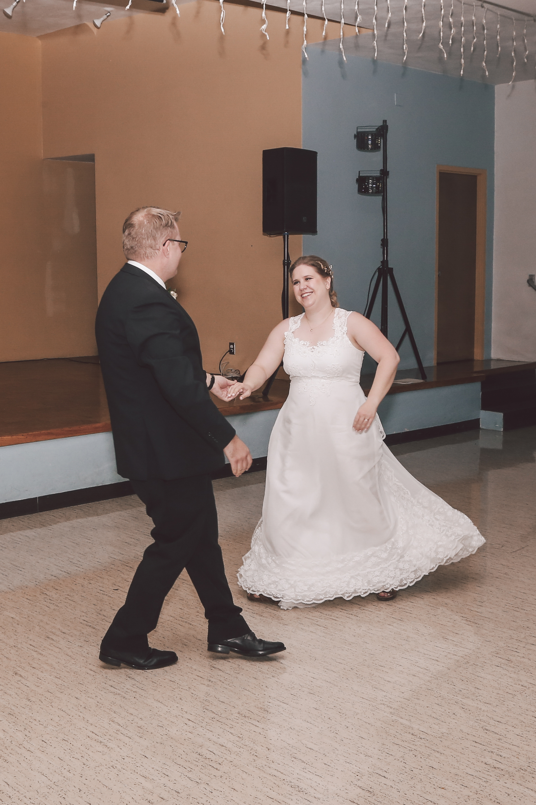

![]()
library(tidyverse)
library(httr)
library(stringr)
library(purrr)
library(readxl)
library(knitr)First dance song discovery
misc
One year ago today, my husband and I got married! I figured our first anniversary was as good a time as any to share this silly project I used data and R for in the lead-up to our wedding.
As we were planning our wedding, I asked my husband if he wanted to do a first dance. I was expecting him to say ‘no’– he’s an introvert who doesn’t love the spotlight, and he has never really danced. To my surprise he said we definitely should do one, under one condition: that we take dance lessons in advance. Be still my heart! I grew up dancing (ballet, modern, hip hop, ballroom, etc) and love it so much. Doing dance lessons with my husband was a dream come true. Because I had more experience with dance, he let me pick the style we would learn and I wanted to do swing.
We worked with Cindy from TC Swing, who was wonderful. During our first lesson, she showed us both Lindy Hop and East Coast Swing. She asked my husband which style felt more natural, and what our goals were for our dance. We settled on East Coast Swing because the basic step was easier to learn and we felt like we could learn more cool moves and feel more comfortable on the day.
As part of her wedding dance lesson package, Cindy also offers consultation on song choice and will do minor edits to get a track that works best for you! She had some suggested songs, but we wanted something that felt more like our musical style.
Jason and I have similar music taste– after we started dating we discovered there were many times we had been at the same concerts before we met, and we’re both big fans of The Current. (Fun fact: I had a mention of The Current in the first draft of my dissertation acknowledgements, but I cut it to save space. I still regret it!) The Current is a local public radio station that plays a huge variety of music, from oldies to local music to country to pop and on and on. From their website: “The Current brings listeners the best authentic new music alongside the music that inspired it, from local to legendary, indie to influential, new to nostalgic.”
Just how much do we love The Current? Well, we hired our wedding DJ through Transmission Music (founded by The Current DJ Jake Rudh). Our DJ, Shane Kramer, is now actually spinning tunes on The Current himself! Our cocktail hour and dance party music definitely had that Current vibe, and we’re grateful to Shane for making that happen.
For several weeks, both Jason and I worked on making lists of songs we might want for our first dance. My process was to think of songs I liked, and listen to The Current and write down anything that caught my ear. I think Jason’s was similar. But, many of them weren’t at the right tempo, or if they were, we’d realize the song was actually about something pretty dark. (We weren’t looking to dance to a song about a breakup or drug overdose.) There are lists of swing-tempo songs online, but none of them really spoke to us.
So, I took to the data! I’m not sure how I stumbled on this dataset, maybe Data is Plural, but I found out that a University of Minnesota librarian named Shane Nackerud had collected data on all the songs played on The Current from approximately 2005 to 2020. Local newspaper City Pages did an article on the project at the time (though the City Pages is now defunct, so that’s an Internet Archive link). And the data is still available on Google Drive!
I played around with the data a bit, starting by looking at the mega-dataset Shane had put together of everything 2009-2018,
TheCurrent <- read_csv("TheCurrent2009-2018.csv")
TheCurrent <- TheCurrent |>
mutate(date = ymd(date))
songcounts <- TheCurrent |>
count(Song, Artist)
top893 <- songcounts |>
arrange(desc(n)) |>
slice(1:893)In the Twin Cities, The Current broadcasts on 89.3 FM, so they often do “top 893” promotions, like the top 893 albums, 893 essential songs of the 90s and 893 essential bands. All of these promos are based on popular votes from the community, not actually the most-played songs or bands. This is a cool way to do things (kind of the opposite of top 40!) but I thought I’d take a look at the data as well.
top893 |>
slice(1:10) |>
kable()| Song | Artist | n |
|---|---|---|
| Communist Daughter - Not The Kid | Communist Daughter | 541 |
| Edward Sharpe And The Magnetic Zeros - Home | Edward Sharpe And The Magnetic Zeros | 533 |
| The National - Bloodbuzz Ohio | The National | 532 |
| The Lumineers - Ho Hey | The Lumineers | 526 |
| Foster The People - Pumped Up Kicks | Foster The People | 501 |
| Of Monsters And Men - Little Talks | Of Monsters And Men | 492 |
| The Heavy - How You Like Me Now? | The Heavy | 489 |
| Animal Collective - My Girls | Animal Collective | 488 |
| LCD Soundsystem - Dance Yrself Clean | LCD Soundsystem | 484 |
| JD McPherson - North Side Gal | JD McPherson | 476 |
Maybe this top 10 list will give you a flavor of the station. This top 893 song list by airplay was all songs that were very familiar to me and my husband, because we are daily listeners to the radio station. But, the list wasn’t that helpful for picking a first dance, because those songs are at all sorts of un-useful tempos for swing dancing.
Enter, the Spotify API! I found a tutorial on using the Spotify API with R, and got an API key following their instructions.
spotifyKey <- "SUPERSECRETKEY" # replace with your key if you're following along
spotifySecret <- "SUPERSECRETSECRET" # ditto
response <- POST(
"https://accounts.spotify.com/api/token",
accept_json(),
authenticate(spotifyKey, spotifySecret),
body = list(grant_type = "client_credentials"),
encode = "form",
verbose()
)
mytoken <- content(response)$access_token
HeaderValue <- paste0("Authorization: Bearer ", mytoken)Once I was authorized, I wrangled my data to create the proper Spotify URI for each song.
top893 <- top893 |>
separate_wider_delim(
col = Song, names = c("artist", "title"),
delim = " - "
) |>
mutate(
title = str_replace_all(title, "[[:punct:]]", " "),
artist = str_replace_all(artist, "[[:punct:]]", " ")
) |>
mutate(
title = str_replace_all(title, " ", "+"),
artist = str_replace_all(artist, " ", "+")
) |>
mutate(URI = paste0("https://api.spotify.com/v1/search?q=%2520track%3A",
title, "%2520artist%3A", artist, "%2520&type=track"))
# URI = paste0("https://api.spotify.com/v1/search?q=", "%2520track%3A", "not%2520the%2520kid", "%2520", "artist%3A", "communist%2520daughter", "%2520&type=track")(Note my commented out work where I tried it with the top song from my original list.)
getSpotifyIDs <- function(URI) {
res <- GET(url = URI, add_headers(Authorization = HeaderValue))
if (res$status_code != 200 | content(res)$tracks$total == 0) {
NA
} else {
content(res)$tracks$items[[1]]$id
}
}top893 <- top893 |>
mutate(spotifyID = map(URI, possibly(getSpotifyIDs, otherwise = "fail")))
top893 <- top893 |>
unnest(spotifyID)
# write_csv(top893, "top893spotify.csv") # save your work!You only get to hit the API so many times in a 24-hour period, so it’s good to save your work. I saved the data out to a new csv so I would have the Spotify IDs for each song.
Then it was time to get the audio features! Again, we need to do a bit of data wrangling to get the URIs correct.
top893 <- read_csv("top893spotify.csv") |>
filter(!is.na(spotifyID)) |>
mutate(URI = paste0("https://api.spotify.com/v1/audio-features/", spotifyID))And a couple more helper functions. (Note– it’s possible I found these functions somewhere on the web. I looked through my search history and on GitHub to see if I could find a source and couldn’t find one. But the me-of-18-months-ago didn’t do a great job of documenting where her code came from. If this is yours or you know the source, let me know and I will edit to add credit!)
getBPM <- function(URI) {
res <- GET(url = URI, add_headers(Authorization = HeaderValue))
if (res$status_code != 200) {
NA
} else {
content(res)$tempo
}
}
getFeatures <- function(URI) {
res <- GET(url = URI, add_headers(Authorization = HeaderValue))
if (res$status_code != 200) {
NA
} else {
content(res)
}
}Then it was possible to do things like get the BPM or the musical features!
top893 <- top893 |>
mutate(tempo = map(URI, possibly(getBPM, otherwise = "fail")))
top893 <- top893 |>
unnest(tempo)
# write_csv(top893, "top893_withBPM.csv") # save your work!With that information, we can narrow to songs good for swing:
top893_bpm <- read_csv("top893_withBPM.csv")
swing_overall <- top893_bpm |>
filter(tempo >= 155, tempo < 185) |>
select(Artist, title, n, tempo)
swing_overall |>
arrange(desc(n)) |>
slice(1:10) |>
kable()| Artist | title | n | tempo |
|---|---|---|---|
| The National | Bloodbuzz%2520Ohio | 532 | 157.066 |
| Benjamin Booker | Violent%2520Shiver | 443 | 165.096 |
| Grizzly Bear | Two%2520Weeks | 432 | 159.685 |
| Muse | Madness | 430 | 180.301 |
| Modest Mouse | Lampshades%2520On%2520Fire | 426 | 176.156 |
| The Black Keys | Lonely%2520Boy | 425 | 166.300 |
| Fitz And The Tantrums | MoneyGrabber | 409 | 169.965 |
| Joseph | White+Flag | 406 | 170.111 |
| San Cisco | Awkward | 405 | 161.920 |
| OK Go | This+Too+Shall+Pass | 398 | 160.032 |
When we eventually went through songs with Cindy she often disagreed with the tempo listed on Spotify, so that wasn’t a perfect metric but it did narrow things down. (Cindy uses an online tool to make it easier to count the tempo.) I’m also not sure how I came up with 155 to 185 beats per minute (BPM). If you look online, you will see ranges that start a little lower, but perhaps we realized the Spotify API was off in a particular direction?
Now came the manual part– even though these songs are in the right tempo, we need to decide if we like them and if the lyrics would be okay for a first dance. Looking through the list of the top songs from 2009-2018, we didn’t see anything we were that excited about. I think part of the problem was the big year range kind of diluted songs that were briefly popular but not over that entire time period. So, I decided to limit the search just to songs played on the radio in 2019 (the year Jason and I met).
That meant re-running the analysis with just the 2019 data.
TheCurrent2019 <- read_excel("The Current - 2019.xlsx")
top893_2019 <- TheCurrent2019 |>
count(Song, Artist) |>
arrange(desc(n)) |>
slice(1:893) |>
separate_wider_delim(
col = Song, names = c("artist", "title"),
delim = " - ", too_few = "align_start", too_many = "merge"
) |>
mutate(
title = str_replace_all(title, "[[:punct:]]", " "),
artist = str_replace_all(artist, "[[:punct:]]", " ")
) |>
mutate(
title = str_replace_all(title, " ", "+"),
artist = str_replace_all(artist, " ", "+")
) |>
mutate(URI = paste0("https://api.spotify.com/v1/search?q=%2520track%3A",
title, "%2520artist%3A", artist, "%2520&type=track"))Of course, we’d already looked at some of the songs, so we don’t want to waste API calls on those.
top893_2019 <- top893_2019 |>
anti_join(top893_bpm, by = join_by(title == title, Artist == Artist))The rest follows on as before.
top893_2019 <- top893_2019 |>
mutate(spotifyID = map(URI, possibly(getSpotifyIDs, otherwise = "fail")))
top893_2019 <- top893_2019 |>
unnest(spotifyID)
# write_csv(top893_2019, "more2019_IDs.csv")
top893_2019 <- read_csv("more2019_IDs.csv")
top893_2019 <- top893_2019 |>
filter(!is.na(spotifyID)) |>
mutate(URI = paste0("https://api.spotify.com/v1/audio-features/", spotifyID))
top893_2019 <- top893_2019 |>
mutate(tempo = map(URI, possibly(getBPM, otherwise = "fail")))
top893_2019 <- top893_2019 |>
unnest(tempo)
# write_csv(top893_2019, "top893_2019_tempo.csv")
top893_2019 <- read_csv("top893_2019_tempo.csv")This time, I also tried grabbing the ‘features’ Spotify makes available, like energy, danceability, key, etc.
top893_2019 <- top893_2019 |>
mutate(info = map(URI, possibly(getFeatures, otherwise = "fail")))
test <- top893_2019 |>
unnest_wider(info, names_sep = "-")
# write_csv(test, "more2019_allinfo.csv")And again, we can narrow our search to just the songs in the right tempo,
top893_2019 <- read_csv("top893_2019_allinfo.csv")
swing_2019 <- top893_2019 |>
filter(tempo >= 155, tempo < 185) |>
select(Artist, title, n, tempo, `info-danceability`, `info-time_signature`)
nrow(swing_2019)[1] 81swing_2019 |>
arrange(desc(n)) |>
slice(1:10) |>
kable()| Artist | title | n | tempo | info-danceability | info-time_signature |
|---|---|---|---|---|---|
| The Black Keys | Lo+Hi | 286 | 166.300 | 0.356 | 4 |
| Vampire Weekend | This+Life | 205 | 170.234 | 0.620 | 4 |
| Anderson Paak | Make+It+Better+feat++Smokey+Robinson | 195 | 178.555 | 0.676 | 4 |
| Lizzo | Cuz+I+Love+You | 193 | 162.159 | 0.566 | 3 |
| Fontaines D.C. | Boys+In+The+Better+Land | 191 | 176.977 | 0.392 | 4 |
| The National | Rylan | 191 | 156.008 | 0.368 | 3 |
| Tank And The Bangas | Ants | 189 | 170.910 | 0.446 | 4 |
| Soccer Mommy | lucy | 188 | 169.064 | 0.482 | 4 |
| Sharon Van Etten | Jupiter+4 | 185 | 177.742 | 0.324 | 4 |
| GRiZ | Can+t+Get+Enough | 184 | 168.076 | 0.584 | 4 |
At this point, I don’t remember how we got from 80 songs down to our short list, but it was a process of looking at the artist and song title, looking up lyrics online, and listening to snippets of the song on Tidal (that’s right, I used the Spotify API but I’m not a Spotify person!). It’s worth noting that the Spotify features like danceability weren’t that useful, perhaps because the songs were lesser-known so there was a lot of missing data. We eventually got it down to the following,
- Wake Up (Chastity Brown)
- Love is the Law (The Suburbs)
- New Song (Warpaint)
- Colors (Black Pumas)
- Good for You (Dessa)
- 99 (Barns Courtney)
- Let the Good Times Roll (JD McPherson)
I think we ran this whole list by Cindy, and she helped us narrow it down further. We really liked Love is the Law, but it was just a touch too fast for us to dance to comfortably. So we ended up with… Let the Good Times Roll! Interestingly, I think they’re lindy-hopping in the music video.
Once we had the song, we practiced and practiced and practiced with it. We didn’t do set choreography, so Jason was truly leading on the day, putting together the moves we had learned in whatever order felt good. It’s a pretty repetitive song, so it’s a little hard to keep track of where you are in it, and we wanted to end with a dip. Happy to say, we nailed it!
Let the Good Times Roll never came up in the lists of swing dance songs, or first dance songs, or swing dance first dance songs that I saw online. While our process of finding a song absolutely had a human in the loop, being able to narrow to songs we would probably like (from our favorite radio station) and then further hone in on songs in the right tempo (using Spotify) allowed us to target our search.
I had a blast dancing with my husband at our wedding, and I think he blew the minds of his friends and family with his dance skills.

Photo by Snapshot Wanderlust.